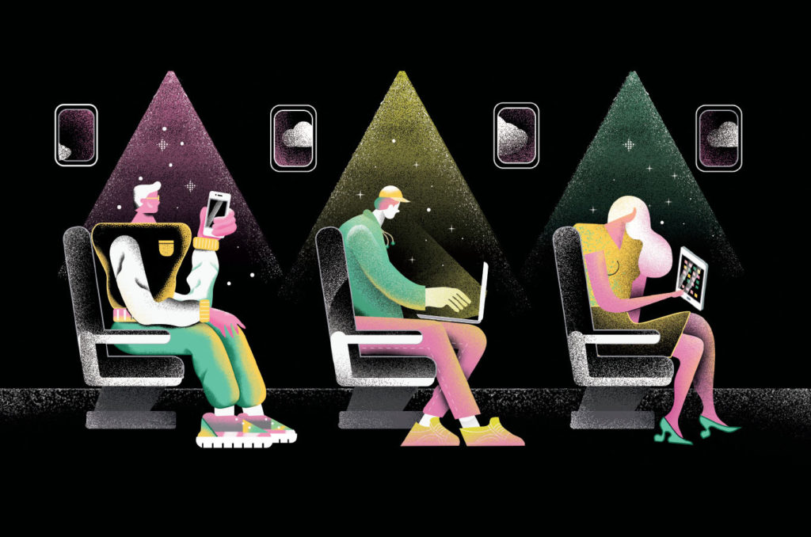
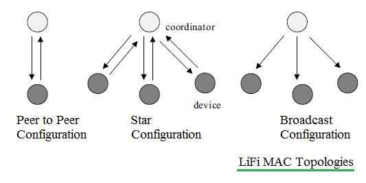
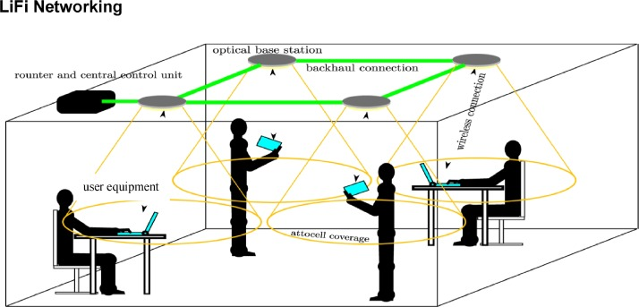
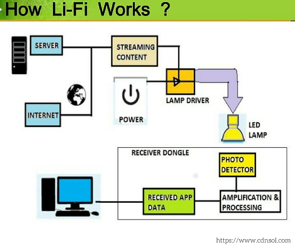

Most of you may be familiar with Wi-Fi. Also, you may have used this technology to access internet. But have you heard about Li-Fi? Even many of us may not know anything about it. This is a new technology which is under its development phase.
INTRODUCTION
Imagine two situations in one of which you are using internet from Wi-Fi. And in another you are using internet which is 100 times faster than that in first situation. How much pleasure you felt in second situation? Of course, everyone will have a wish to live in second situation.  This is what Li-Fi provides. Yes Li-fi will provide us internet which is very faster when compared to Wi-Fi.
Li-Fi stands for Light Fidelity. In very simple word, Fidelity corresponds to the resemblance of the output signals to the input signals. Li-Fi is a kind of wireless communication which uses light for transmission of data between devices. This technology was first eight years ago in 2011, by Harald Haas in Edinburgh, Scotland. With the help of this technology we can transmit data at very high speeds. This technology uses light from ultraviolet, visible and infrared spectrums with wavelength varying from 380nm to 780nm. Since it consists of major part of visible region(400nm-700nm), so it is named as VLC. It works on the principles of VLC (Visible Light Communication). The network consists of VPAN also known as VLC Personal Area Network. This technology uses LEDs (light emitting diodes) and Laser diodes at the transmitting and receiving end for the transmission of visible light. Currently this technology is under development in many companies. This is going to rule over Wi-Fi and the world of internet!
This is what Li-Fi provides. Yes Li-fi will provide us internet which is very faster when compared to Wi-Fi.
Li-Fi stands for Light Fidelity. In very simple word, Fidelity corresponds to the resemblance of the output signals to the input signals. Li-Fi is a kind of wireless communication which uses light for transmission of data between devices. This technology was first eight years ago in 2011, by Harald Haas in Edinburgh, Scotland. With the help of this technology we can transmit data at very high speeds. This technology uses light from ultraviolet, visible and infrared spectrums with wavelength varying from 380nm to 780nm. Since it consists of major part of visible region(400nm-700nm), so it is named as VLC. It works on the principles of VLC (Visible Light Communication). The network consists of VPAN also known as VLC Personal Area Network. This technology uses LEDs (light emitting diodes) and Laser diodes at the transmitting and receiving end for the transmission of visible light. Currently this technology is under development in many companies. This is going to rule over Wi-Fi and the world of internet!
HISTORY OF Li-Fi
Li-Fi term was first introduced in a global TED talk in 2011 by Professor Harald Hass. He is a professor of mobile communication in University of Edinburgh, Scotland. The credit of foundation Li-Fi technology goes to Professor Harald Hass along with Dr Mostafa Afgani. From then many companies were formed to explore and market the technology. Many companies started to provide unidirectional VLC (visible light communication) products. In august 2018 a secondary school in Scotland namely Kyle Academy had used this technology within the school. A USB device was able to read the data given to it by flickering of lights. Now Air France is trying to test this technology. The Li-Fi business was projected to have a compound annual growth of 82% from 2013 to 2018.
TECHNICAL ASPECTS
According to VLC standards there are three classes of devices which include:
- Infrastructure
- Mobile
- Vehicle
- Star Configuration: In this configuration there are coordinators and devices. Communication is established between them.
- Peer to Peer Configuration In this topology one of the devices act as coordinator or controller at the time of establishing communication.
- Broadcast Configuration: Same message is transferred to all participants through same host.
COMPARISION BETWEEN Li-Fi AND WIFI
We already know that Li-Fi stands for light fidelity. Whereas Wi-Fi stands for wireless Fidelity. They can be compared with each other in terms of various factors. Data Transmission: Both of Li-Fi and Wi-Fi uses electromagnetic waves for data transmission. Li-Fi uses light of visible range but what Wi-Fi uses are Radio waves. The visible light spectrum is about 10,000 longer than the whole radio frequency spectrum. Due to this reason there is less chance of interference between waves in visible region. This reduces the probability of data loss while transmission. Capacity: Wi-Fi have limitations on capacities while Li-Fi does not have a limitation on capacity. Implementation: Li-Fi can be used in electromagnetic sensitive areas like airlines, operation theaters in hospitals and nuclear power plants. It can be also used in under water exploration, house and office premises for exchange of data. As already stated, the probability of interference is less in Li-Fi, therefore it can be used in dense regions. Whereas due to more interference Wi-Fi is preferred to be used in less dense areas. Privacy: Talking on to privacy of data, since light cannot pass through walls so Li-Fi will provide more secured data transmission. While in Wi-Fi the radio waves cannot be blocked by walls hence, we should provide alternate ways for secured transmission of data. Range of coverage: Li-Fi can cover distances up to 10 meters. On the other hand, Wi-Fi can be used over 30 meters. The range of Wi-Fi can vary depending upon transmit power and antenna type. Data transfer rate: Normal data transfer speed of Li-Fi is about 1 Gb per second whereas Wi-Fi can provide up to 150 Mb per second. This speed can be extended up to 1-2 Gbps by using WiGig/Giga-IR. Components: Li-Fi can be made from LED bulbs, receiver and lamp driver i.e. combination of all these would be sufficient for making a Li-Fi system. Whereas in case of a Wi-Fi routers are needed to be installed on the system. Data density: In terms of data density Li-Fi can work in highly dense surroundings whereas Wi-Fi works in less dense environment. Market Maturity and Power Consumption: Li-Fi can be called as less market mature system because it is under development whereas Wi-Fi can be called as more market mature system because it is completely developed. Li-Fi requires less external power as it contains only LED bulbs as compared to Wi-Fi. One thing is sure after this comparison that Li-Fi cannot replace Wi-Fi. For better outcomes we need to use a combination of these two.
ADVANTAGES
 As light cannot pass through walls there is less chance of mixing of signals. This makes our data more secure. This technology provides much faster data transmission. In normal condition its speed is 1 Gb per second. Whereas In laboratory condition scientists have achieved speed up to 224 Gb per second. Faster transmission will give rise to better service qualities and better communication. Li-Fi requires much less power for transmission. Since Li-Fi uses LED bulbs as transmission source, so LED bulb can be used for both household and internet purpose. In this way it is more efficient than other technologies. Nowadays LED bulbs are used by almost everyone so it will be quite easier for authorities to replace these bulbs with Li-Fi compatible bulbs. After installation Li-Fi is expected to be 10 times cheaper than Wi-Fi. Since Li-Fi uses light for communication it can be used in electromagnetic sensitive zones like nuclear powerplants, aircrafts. Li-Fi can be used in operation theaters to access the internet because it will not harm to the patient. Whereas electromagnetic radiations like radio waves can cause harm to the patient.
DISADVANTAGES
Since this technology is new and is under development, it needs a lot of amount to be invested for its research and development. Hence at first it is quite expensive. The current technology must be upgraded a bit so that it become accessible for common public. Hence it needs to be implemented on a large scale. But it needs specialized hardware like photodiodes for sensors which are not available on large scales. The range of Li-Fi is very smaller. This is so because of dispersion of light and inability of light to pass through walls and other opaque objects. If we move out of range, it will interrupt our connectivity. Replacement of Wi-Fi with Li-Fi is not possible because almost whole world is using Wi-Fi for internet works. Li-Fi have extremely fast downlink speed whereas there is nothing about uplink speed in its research. Also, Wi-Fi is more flexible than Li-Fi. In day sunlight may cause interruption to the signal by causing interference with the visible light. We always need our lights on to use Li-Fi i.e. we cannot access internet when our lights are off. So, we conclude that, A completely new and upgraded infrastructure needs to be installed for use of Li-Fi.